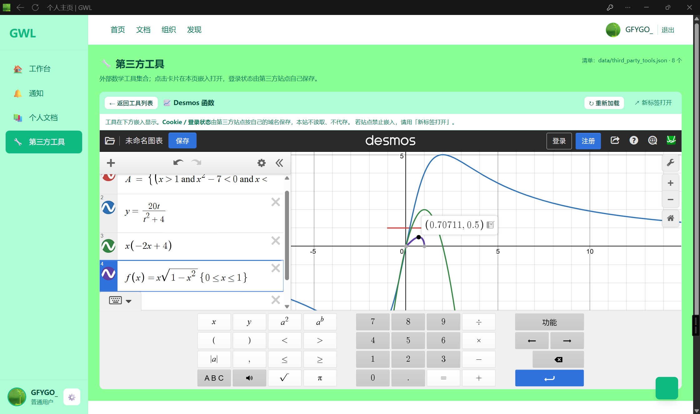
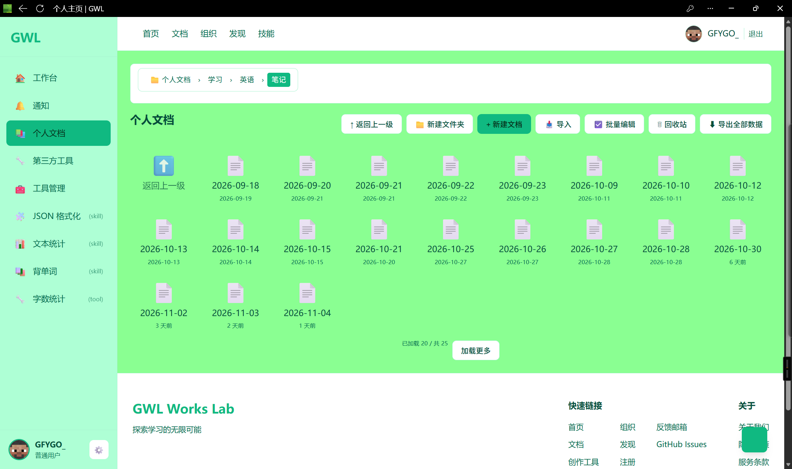
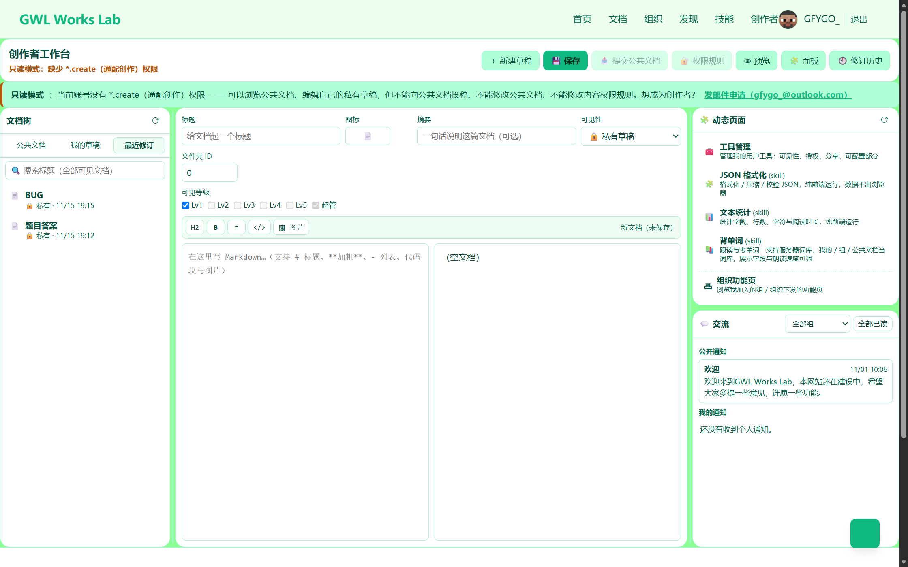

01 · 网络实用工具集合
常用的数学工具，收进站里直接打开
Desmos 与 GeoGebra 这些每天都在用的工具，不必再翻收藏夹。点开卡片即可在站内嵌入使用，画图、计算、记笔记都不离开当前页面；第三方登录状态由对方站点自己保存，本站不读取、不代存。
Desmos 函数
函数图像、不等式与参数曲线，输入表达式即刻成图。
GeoGebra 计算器套件
代数、几何、3D 与概率，常用计算器一次配齐。
GeoGebra 笔记
边写边算，图文混排的数学笔记本，适合整理解题过程。
Desmos 笔记 Beta
把计算过程整理成可分享的笔记，复盘时更清楚。
登录后在「第三方工具」页内嵌入打开；若站点禁止嵌入，也可以在新标签页打开。

02 · 网站学习工具
背单词，也可以是一套完整的小工具
以站内「背单词」技能为例：跟读与考单词两种模式，支持服务器词库，也能直接选「我的 / 组 / 公共文档」里的任意一篇。朗读速度、循环播放、展示字段都能按自己的节奏调。
03 · 简单易用文档
写文档，不用先学一套复杂系统
Markdown 编辑、实时预览、文件夹归档、批量整理与回收站，都做成了看得懂的按钮。公共 / 组 / 私有三个根目录配合 1–5 级权限，谁能看、谁能改，一目了然。
Markdown + 实时预览
左边写、右边看，标题、列表、表格、代码块与公式都能用。
文件夹与批量操作
新建文件夹归档，多选后批量编辑；误删的文档进回收站，还能找回。
导入 Markdown 与图片
多选导入 Markdown 和图片，正文里的图片引用会自动重写。
三级目录 + 多级权限
公共、组、私有各管各的，按 1–5 级控制可见范围，分享给谁由你决定。
修订历史与导出
改错了能回看、能恢复；单篇或整包导出，数据始终在自己手里。
📄2026-11-041 天前
📄2026-11-032 天前
📄2026-11-023 天前
📄2026-10-306 天前
📄2026-10-289 天前
📄2026-10-2710 天前
Markdown · 编辑区 · 已保存
英语 Unit 6 · 单元笔记
# Unit 6 harmony 融洽相处，和谐 rhythm 节奏；韵律 - 定语从句：who / which - 重点：**关系副词**
04 · 使用展示
从个人文档，到创作者工作台
同一套界面，既能管理自己的学习资料，也能写文档、排版、发布到公共文档库。下面是站内的真实截图。
个人文档 · 按日期归档
个人文档
创作者工作台 · 三栏编辑
创作者